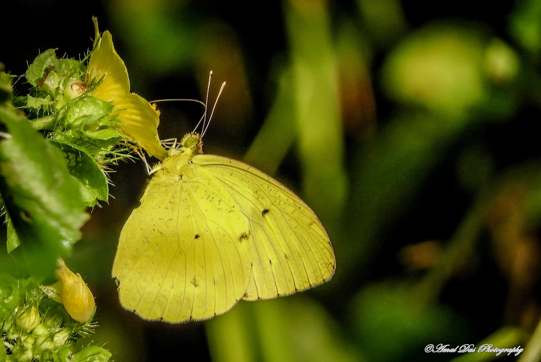

昆虫 · 动物界
橙粉蝶 Ixias pyrene

雄蝶翅面橙黄、前翅顶角镶黑边的粉蝶，雌蝶翅面偏灰白，常见于华南与东南亚的林缘，幼虫取食山柑属植物。
- 分类
- 门节肢动物门纲昆虫纲目鳞翅目科粉蝶科属橙粉蝶属
- 栖息环境
- 低山至平原的林缘、灌丛、果园和村落附近
- 地理分布
- 中国华南、西南和台湾，以及印度、缅甸、泰国、越南、马来西亚和印度尼西亚
- 保护级别
- 尚无保护级别；为华南常见的访花昆虫
物种志
橙粉蝶的翅展约五至六厘米，雌雄异型明显。雄蝶翅面呈鲜艳的橙黄色，前翅顶角有宽阔的黑边，黑边内侧常伴一条橙色纹，后翅外缘也有窄黑边；雌蝶翅面为灰白或淡黄色，前翅的黑带更宽，后翅反面有淡褐色的云状斑。它的身体灰黑，被灰白色毛，触角呈棒状。停歇时翅膀常半开，露出反面斑纹。
它分布于中国华南、西南和台湾，以及印度、缅甸、泰国、越南、马来西亚和印度尼西亚，栖息在低山至平原的林缘、灌丛、果园和村落附近，常在花丛间快速飞行，雄蝶有时成群在湿地上吸水。幼虫以山柑属等白花菜科植物为食，雌蝶把卵单产在寄主的嫩叶上，幼虫孵化后取食叶片，化蛹于枝条上，一年可发生多代，以成虫或蛹越冬。它在华南是常见的访花昆虫，尚无保护级别。
形态与习性
- 翅展约五至六厘米，雌雄异型明显
- 雄蝶翅面橙黄，前翅顶角有宽阔黑边
- 雌蝶翅面灰白或淡黄，黑带更宽
- 食性幼虫取食山柑属等白花菜科植物
- 习性雄蝶常成群在湿地吸水
- 发生世代一年可发生多代，以成虫或蛹越冬
趣味知识
- 橙粉蝶的雌雄颜色差别很大，橙黄的是雄蝶，灰白的才是雌蝶。
- 它停歇时常常半张开翅膀，露出后翅反面的淡褐色云纹。
- 雄蝶会在湿沙或水洼边成群吸水，把矿物质积攒起来留给配偶。